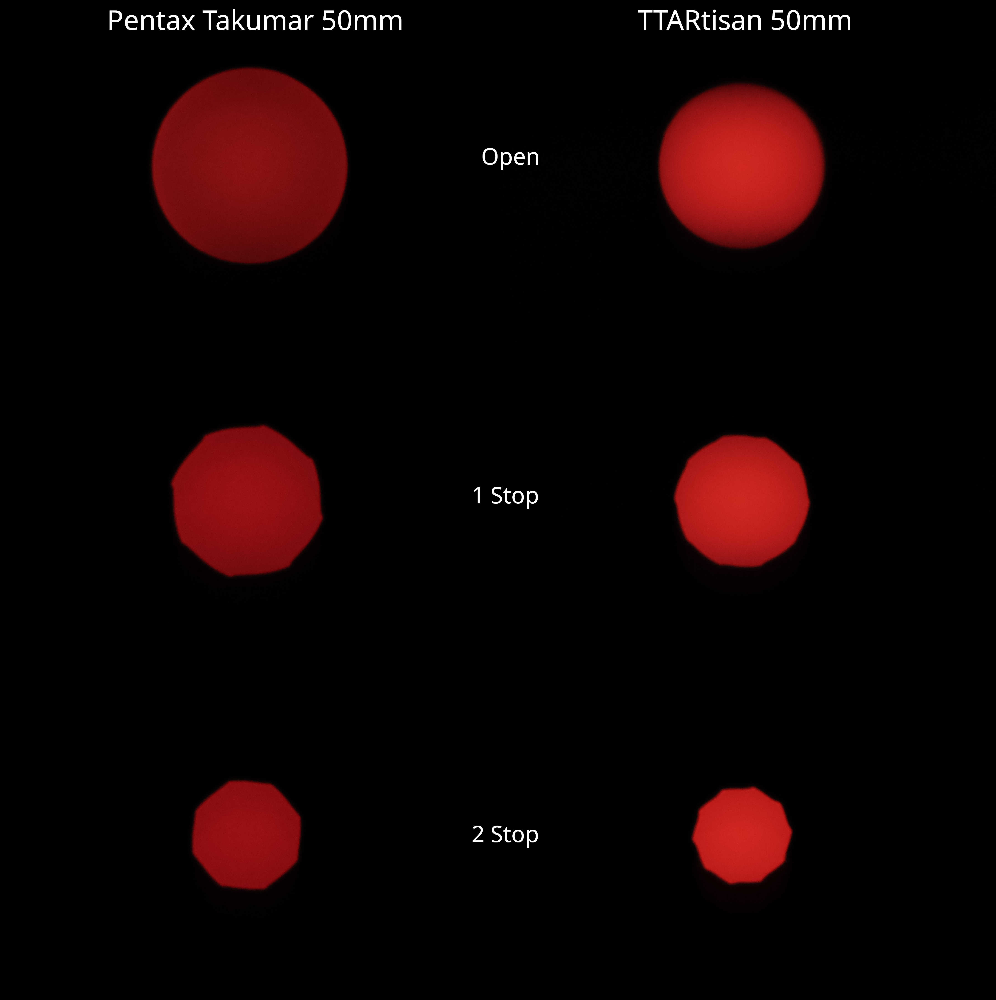

I currently own 2 different nifty fifty lenses, a vintage Pentax SMC Takumar 50mm f/1.4 (7-element), the first lens I ever bought myself, and a TTArtisan 50mm f/1.2, a newer addition to my kit. They're both quite cheap manual focus prime lenses, each just over 1000 NOK, but I've ended quite enjoying them both.
While the Takumar is in no need of replacement, due to its age, it uses an M42 mount. My primary camera is a Fujifilm X-T1, and it needs an adapter that adds extra bulk. I therefore ended up buying the TTArtisan its improved portability, but it would be nice if it could match the high bar set by the Takumar.
I thought I'd do a few simple tests to better compare the lenses as I'd like to know the strengths and weaknesses of each one. It is mostly for my own sake, but since I'm doing it anyways I might aswell share it here in case anyone wonder about these exact lenses.
Intuitivly I expected the TTArtisan lens to be comparable, if not sharper, than the Takumar due to the age difference. I was, however, suprised to find that while showing similar sharpness in the center, the TTArtisan is significantly softer in the corners, even at higher apertures.
The image below shows photos taken of a painting at different apertures, cropped at the center and bottom-right corner for comparing the sharpness of each lens under similar conditions. Above f8, no obvious increase in sharpness were found for either lens.

I am impressed by the quality produced by the Takumar even at low apertures, especially since I've got the supposedly inferior 7-element version, as compared to the rarer 8-elements. While soft at f/1.4, both the center and corners are usably sharp even at f/2, making this lens a candidate for astrophotography.
Comparable sharpness in the corners is not found on the TTArtisan until at least f/4 or f/5.6. This is unfortunate, as the center sharpness is good, even at f/1.4. The contrast seems to be slightly better than the Takumar, and it doesn't have the yellow tint caused by the radioactive thorium found in its glass.
One of the main features of fast fifties is their bokeh balls, and I'm happy to see that both lenses perform well in this regard. One would not be disappointed with either, but I think overall Takumar is nicer. It's bokeh is larger, and color deeper and slightly diffuse, which I think look nicer.
Both wide open and stepped down the Takumar is also sharper, compared to the TTArtisan, which is somewhat fuzzy with a slight gradient. This is especially noticable 2 stops down where the TTArtisan's blades produce jagged corners whereas the Takumar produces more uniform transitions.
